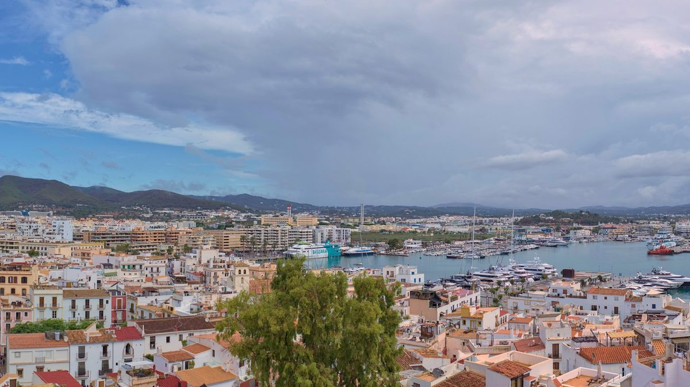

스페인 이비사, 공영주차장 지붕 태양광 70kW를 반경 5km 주민·소상공인과 나눠…1kW 연 100유로, 취약가구 우선

카스세레스 주차장 지붕 100kW 가운데 30kW는 시청이 쓰고 나머지로 주택 49가구·업소 7곳 수용 예정…시청 추산 1kW당 연 최대 300유로 요금 절감, 11월 9일까지 신청
스페인 발레아레스제도 이비사시가 시내 카스세레스(Cas Serres) 공영주차장 지붕 태양광 설비의 전기를 주변 주민·소상공인과 나눠 쓰는 '공유 자가소비' 참여자를 11월 9일까지 모집한다. 발레아레스 에너지기관(IBE)이 추진하고 시청이 참여를 독려하는 이 사업은 100kW 설비 가운데 30kW를 시청 자체 소비에 쓰고, 나머지 70kW로 주택 49가구와 업소 7곳을 받을 예정이다. 설비에서 5km 안에 계량기가 있는 전기 계약자면 신청할 수 있고, 주택은 1kW, 업소는 3kW(연 300유로)를 배정받으며 소비가 적은 업소는 1kW를 고를 수도 있다. 참여자는 1kW당 연 100유로를 내는데, 시청 추산으로는 1kW가 연 최대 300유로까지 요금을 줄여 분담금을 빼고도 최대 200유로가 남지만 실제 절감액은 사용량과 계약 조건에 따라 달라진다. 전기 공급사를 바꾸거나 설치·유지비를 낼 필요는 없으며, 전기는 기존 배전망으로 들어오고 절감분은 요금서에 자동으로 반영되고 남는 전력은 상계된다. 선정은 취약가구를 먼저 하고 나머지는 서류를 빠짐없이 낸 순서대로 하며, 신청은 IBE 누리집이나 주정부 에너지전환 사무소에서 받는다.
시민에너지 관점
지붕 100kW를 시청 30kW, 주민 70kW로 처음부터 갈라 둔 것은 공공 설비의 전기를 누가 얼마나 가져갈지 사업 첫날 정해 놓았다는 뜻이다. 공공부지 태양광 전기를 주민과 나누면 절차만 복잡해지고 제대로 돌아가지 않는다는 걱정이 있지만, 이비사는 1kW 연 100유로 정액 분담, 공급사를 바꾸지 않는 요금서 자동 반영, 취약가구 우선 선정으로 지붕도 목돈도 없는 주민의 문턱을 낮췄다. 다만 이 방식은 주민이 설비를 소유하는 것이 아니라 전기 몫을 해마다 빌려 쓰는 구조여서, 다음 단계는 주민과 협동조합이 설비 지분을 갖고 수익까지 나누는 것이어야 한다. 국내 공영주차장·공공건물 태양광도 공모 단계에서 주민 몫 비율과 참여 반경, 취약계층 우선 기준을 함께 정해 내놓아야 한다.
출처: Diario de Ibiza 2026-10-29 Nuria García Macias 원문 보기
スペイン・イビサ、市営駐車場屋根の太陽光70kWを半径5kmの住民・小規模事業者と分け合う…1kW年100ユーロ、脆弱世帯を優先
カス・セレス駐車場屋根の100kWのうち30kWは市役所が使い、残りで住宅49世帯・事業所7か所を受け入れる予定…市の試算で1kW当たり年最大300ユーロの電気代削減、11月9日まで申し込み
スペイン・バレアレス諸島のイビサ市が、市内のカス・セレス（Cas Serres）市営駐車場の屋根に設けた太陽光発電設備の電気を周辺の住民や小規模事業者と分け合う「共同自家消費」の参加者を11月9日まで募集している。バレアレス・エネルギー機関（IBE）が進め、市役所が参加を呼びかけるこの事業では、100kWの設備のうち30kWを市役所の自家消費に充て、残る70kWで住宅49世帯と事業所7か所を受け入れる予定だ。設備から5km以内にメーターがある電力契約者なら申し込むことができ、住宅には1kW、事業所には3kW（年300ユーロ）が割り当てられ、消費の少ない事業所は1kWを選ぶこともできる。参加者は1kW当たり年100ユーロを負担し、市の試算では1kWで電気代を年最大300ユーロ減らせ、負担金を差し引いても最大200ユーロが残るが、実際の削減額は使用量や契約条件によって異なる。電力会社を切り替える必要も設置・維持費もなく、電気は既存の配電網を通じて届き、削減分は請求書に自動で反映され、余剰電力は相殺される。選定は脆弱世帯を優先し、それ以外は書類をすべてそろえて提出した順とし、申し込みはIBEのウェブサイトか州政府のエネルギー転換窓口で受け付ける。
市民エネルギーの視点
屋根の100kWを市役所30kW、住民70kWと最初から分けておいたことは、公共設備の電気を誰がどれだけ受け取るかを事業の初日に決めたということだ。公共用地の太陽光の電気を住民と分け合えば手続きが複雑になるだけでうまく回らないという懸念もあるが、イビサは1kW年100ユーロの定額負担、電力会社を替えずに済む請求書への自動反映、脆弱世帯の優先選定によって、屋根もまとまった資金もない住民の参加のハードルを下げた。ただしこの方式は住民が設備を所有するのではなく、電気の取り分を毎年借りる仕組みであり、次の段階は住民と協同組合が設備の持ち分を持ち、収益まで分け合うことでなければならない。韓国の公営駐車場や公共建築物の太陽光も、公募の段階で住民の取り分の比率、参加できる範囲、脆弱層優先の基準を併せて示すべきだ。
出典: ディアリオ・デ・イビサ（Diario de Ibiza） 2026-10-29 ヌリア・ガルシア・マシアス（Nuria García Macias） 原文を読む
西班牙伊维萨将公共停车场屋顶光伏70kW分给半径5公里内居民和小商户…每千瓦年费100欧元，弱势家庭优先
卡斯塞雷斯停车场屋顶100kW中30kW由市政府自用，其余预计可容纳49户住宅和7家商户…市政府估算每千瓦每年最多可省电费300欧元，申请截至11月9日
西班牙巴利阿里群岛的伊维萨市正在招募“共享自发自用”参与者，把市内卡斯塞雷斯（Cas Serres）公共停车场屋顶光伏设施所发的电分给周边居民和小商户，报名截至11月9日。该项目由巴利阿里能源研究所（IBE）推动、市政府鼓励参与，100kW设施中30kW用于市政府自用，其余70kW预计可容纳49户住宅和7家商户。电表位于设施5公里范围内的电力用户均可申请，住宅每户分配1kW，商户分配3kW（年费300欧元），用电较少的商户也可选择1kW。参与者每千瓦每年缴纳100欧元，按市政府估算，每千瓦每年最多可减少300欧元电费，扣除费用后最多净省200欧元，但实际节省金额取决于各自的用电量和合同条件。参与者无需更换售电公司，也不承担安装和维护费用，电力经现有配电网输送，节省部分自动体现在电费单上，余电进行抵扣。遴选时优先考虑弱势家庭，其余按材料齐全的提交顺序决定，可通过IBE网站或大区政府能源转型办公室申请。
市民能源视角
把屋顶100kW从一开始就划分为市政府30kW、居民70kW，意味着公共设施的电力由谁拿、拿多少，在项目第一天就已定好。有人担心把公共用地光伏的电分给居民只会让手续变复杂、难以运转，但伊维萨以每千瓦年费100欧元的定额分摊、无需更换售电公司的电费单自动抵扣以及弱势家庭优先的遴选，降低了既没有屋顶也没有大笔资金的居民的参与门槛。不过这种方式并不是让居民拥有设施，而是每年租用一份电力，下一步应当是让居民和合作社持有设施股份、连收益也一起分享。韩国的公共停车场和公共建筑光伏，也应在招标阶段就一并定出居民份额比例、参与半径和弱势群体优先标准。
来源: 伊维萨日报（Diario de Ibiza） 2026-10-29 Nuria García Macias 查看原文
Ibiza shares 70kW of solar on a municipal car park roof with residents and small businesses within 5km, at 100 euros per kW a year with vulnerable households first
Of the 100kW on the Cas Serres car park roof, the city council keeps 30kW and the rest is expected to serve 49 homes and 7 businesses; the council estimates savings of up to 300 euros per kW a year, with applications open until 9 November
The city of Ibiza in Spain's Balearic Islands is recruiting participants until 9 November for a shared self-consumption scheme that splits the output of a solar installation on the roof of the municipal Cas Serres car park with nearby residents and small businesses. Under the scheme, run by the Balearic Energy Institute (IBE) with the city council encouraging sign-ups, the council will use 30kW of the 100kW installation for its own consumption, and the remaining 70kW is expected to serve 49 homes and 7 businesses. Anyone holding an electricity contract with a meter within 5km of the installation can apply; homes are allocated 1kW and businesses 3kW (300 euros a year), while businesses with low consumption may opt for 1kW. Participants pay 100 euros per kW a year, and by the council's estimate each kW can cut bills by up to 300 euros a year, leaving up to 200 euros net after the fee, although actual savings depend on each user's consumption and contract terms. There is no need to switch electricity supplier or pay for installation or maintenance: power arrives through the ordinary grid, savings appear automatically on the bill, and surplus electricity is offset. Vulnerable households will be selected first and the remaining places will go in order of complete applications, which can be filed through the IBE website or the regional government's energy transition offices.
Citizen Energy View
Splitting the 100kW roof from the outset into 30kW for the council and 70kW for residents means it was settled on day one who gets how much of a public installation's power. There are worries that sharing power from solar on public land with residents only adds red tape and never quite works, but Ibiza has lowered the bar for people with neither a roof nor savings through a flat fee of 100 euros per kW a year, automatic bill credits without changing supplier, and priority for vulnerable households. Still, this model does not make residents owners of the installation but has them rent a share of its power each year, so the next step should be for residents and co-operatives to hold equity in the installation and share in its profits too. Solar on public car parks and public buildings in Korea should likewise set out the residents' share, the eligible radius and priority for vulnerable groups at the tender stage.
Source: Diario de Ibiza 2026-10-29 Nuria García Macias Read the original